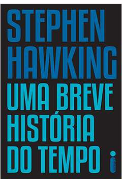
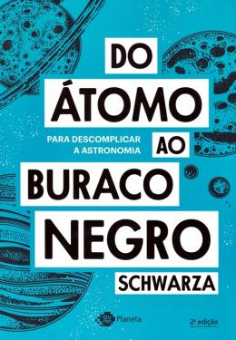
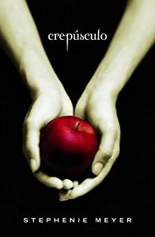
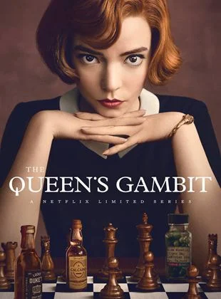

Harry Potter e a Ordem da Fênix

Sinopse
Parece impossível, mas, no bairro mais Muggle do mundo Muggle, Harry é emboscado por Dementors! Para salvar a sua vida e a do primo Dudley, Harry não tem outra hipótese senão usar magia - mesmo sabendo que isso significará a sua expulsão mais que certa de Hogwarts. Enquanto o Ministério da Magia continua a não acreditar que o terrível Senhor das Trevas está de volta, Voldemort e os seus fiéis Devoradores da Morte já começaram a preparar o seu regresso ao poder. Porém, há uma nova esperança: uma antiga ordem secreta, da qual os pais de Harry fizeram parte, voltou a organizar-se e Dumbledore está atento.
Fonte: Google Books
| Data |
Autor |
Idioma Original |
Gêneros |
Número de páginas |
Editora |
| 21 de junho de 2003 |
J.K. Rowling |
Inglês |
Romance, Ficção juvenil, Literatura fantástica |
702 |
Rocco |
Uma breve história do tempo

Sinopse
Uma das mentes mais geniais do mundo moderno, Stephen Hawking guia o leitor na busca por respostas a algumas das maiores dúvidas da humanidade: Qual a origem do universo? Ele é infinito? E o tempo? Sempre existiu, ou houve um começo e haverá um fim? Existem outras dimensões além das três espaciais? E o que vai acontecer quando tudo terminar?
Com ilustrações criativas e texto lúcido e bem-humorado, Hawking desvenda desde os mistérios da física de partículas até a dinâmica que movimenta centenas de milhões de galáxias por todo o universo. Para o iniciado, Uma breve história do tempo é uma bela representação de conceitos complexos; para o leigo, é um vislumbre dos segredos mais profundos da criação.
“Bem-humorado e extremamente didático, Stephen Hawking demonstra os talentos de um grande professor ao usar o cotidiano para ilustrar teorias extremamente complexas.” The New York Times
“Mesmo preso à cadeira de rodas, Stephen Hawking viaja com sua mente por toda a vastidão do espaço e do tempo e desvenda os segredos do universo.” Time
“Uma breve história do tempo é a união do entusiasmo de uma criança ao intelecto de um gênio.” The Sunday Times
Fonte: Google Books
| Data |
Autor |
Idioma Original |
Gêneros |
Número de páginas |
Editora |
| 13 de janeiro de 2015 |
Stephen Hawking |
Inglês |
Divulgação científica |
256 |
Intrínseca |
Do átomo ao buraco negro

Sinopse
Criador do Poligonautas, canal de ciência no YouTube, com mais de 700 mil seguidores.
Depois de inventar a roda, aprender a manipular o fogo, desbravar os sete mares e espalhar sua presença pelo globo terrestre, o ser humano passou a mirar o céu: era o novo oceano a ser explorado. De lá pra cá muita coisa aconteceu e a curiosidade sobre o Universo só aumentou. Para nos ajudar nesta expedição, o autor e divulgador científico Schwarza embarca numa jornada que tem início no caótico universo quântico, passando por objetos que vão de planetas a buracos negros de tamanhos que desafiam a nossa imaginação. Em Do átomo ao buraco negro – para descomplicar a astronomia, entenda como funcionam as estrelas, galáxias, quasares, planetas e mais de 60 objetos astronômicos, em um livro que vai além do que os seus olhos podem ver.
Fonte: Google Books
| Data |
Autor |
Idioma Original |
Gêneros |
Número de páginas |
Editora |
| 17 de julho de 2018 |
Schwarza |
Português |
Divulgação científica |
272 |
Outro Planeta |
Crepúsculo

Sinopse
Crepúsculo poderia ser uma história comum, não fosse um elemento irresistível: o objeto da paixão da protagonista é um vampiro. Assim, soma-se à paixão um perigo sobrenatural temperado com muito suspense, e o resultado é uma leitura de tirar o fôlego. Um romance repleto das angústias e incertezas da juventude - o arrebatamento, a atração, a ansiedade que antecede cada palavra, cada gesto, e todos os medos. Isabella Swan chega à nublada e chuvosa cidadezinha de Forks - último lugar onde gostaria de viver. Tenta se adaptar à vida provinciana na qual aparentemente todos se conhecem, lidar com sua constrangedora falta de coordenação motora e se habituar a morar com um pai com quem nunca conviveu. Em seu destino está Edward Cullen. Lindo, perfeito, misterioso ele é à primeira vista, hostil à presença de Bella - o que provoca nela uma inquietação desconcertante. Ela se apaixona. Ele, no melhor estilo "amor proibido", alerta: Sou um risco para você. Ela é uma garota incomum. Ele é um vampiro. Ela precisa aprender a controlar seu corpo quando ele a toca. Ele, a controlar sua sede pelo sangue dela. Em meio a descobertas e sobressaltos, Edward é, sim, perigoso: um perigo que qualquer mulher escolheria correr. Nesse universo fantasioso, os personagens construídos por Stephenie Meyer - humanos ou não - se mostram de tal forma familiares em seus dilemas e em seu comportamento que o sobrenatural parece real. Meyer torna perfeitamente plausível - e irresistível - a paixão de uma garota de 17 anos por um vampiro encantador. Com direitos vendidos para mais de 40 países e para o cinema, Crepúsculo chegou às telas em 2008, em filme assinado pelos produtores de O Diabo Veste Prada, protagonizado por Robert Pattinson e Kristen Stewart e dirigido por Catherine Hardwicke.
Fonte: Google Books
| Data |
Autor |
Idioma Original |
Gêneros |
Número de páginas |
Editora |
| 15 de dezembro de 2011 |
Stephenie Meyer
|
Inglês |
Romance, Romance de amor, Ficção juvenil, Literatura fantástica, Terror, Literatura vampiresca |
384 |
Intrínseca |
O Gambito da Rainha

Sinopse
Romance que deu origem à aclamada série da Netflix, O Gambito da Rainha é um livro envolvente, com personagens delicados e cenas de tirar o fôlego.
Uma história sobre arte, paixão e determinação que vai encantar leigos e aficionados pelo xadrez.
Depois de perder a mãe aos 8 anos de idade, Elizabeth Harmon é mandada para o orfanato. Calada e retraída, ela lida com a triste realidade tomando os tranquilizantes que a instituição fornece às crianças para mantê-las dóceis.
Até que o carrancudo zelador do lugar começa a lhe dar aulas de xadrez, oferecendo a chance de que ela precisava para sair de seu estado de letargia. Pensando e imaginando as jogadas, Beth sente que finalmente está no controle, e logo fica evidente que tem um talento natural para o jogo.
Depois que ela sai do orfanato, sua mãe adotiva a inscreve em sucessivos campeonatos nos Estados Unidos e Beth alcança uma projeção meteórica. As duas então começam a viajar por outros países em torneios cada vez mais espetaculares, em que o álcool e os tranquilizantes são um oponente tão poderoso quanto os maiores nomes do esporte que Beth precisa enfrentar.
Agora Beth se prepara para encarar o mais importante duelo de sua carreira. Uma jovem solitária no meio masculino do xadrez profissional, ela terá a chance de desafiar a primazia soviética e dar mais um passo em direção ao título mundial.
Mas, para isso, terá que superar de uma vez por todas sua relação autodestrutiva com a bebida e os comprimidos em sua emocionante jornada em busca do sucesso.
Fonte: Google Books
| Data |
Autor |
Idioma Original |
Gêneros |
Número de páginas |
Editora |
| 14 de julho de 2021 |
Walter Tevis |
Inglês |
Romance psicológico |
304 |
Arqueiro |